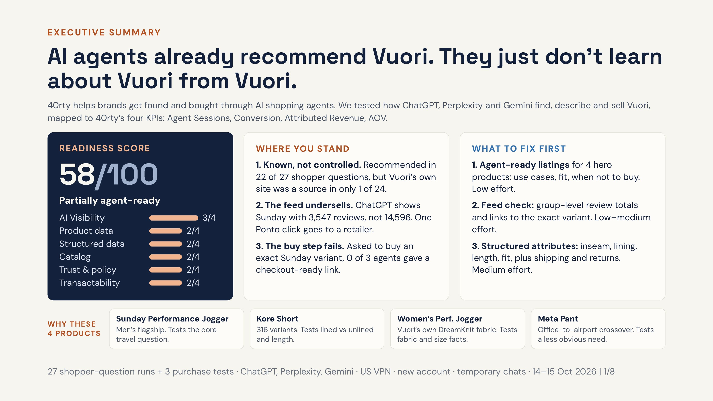
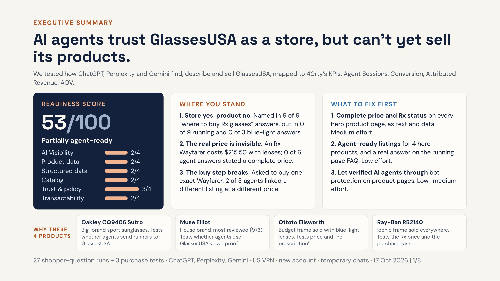

Vuori
vuoriclothing.com · Shopify, headless
58/100
Partially readyAI agents already recommend Vuori. They just don't learn about Vuori from Vuori.
Read the Vuori audit ↓How well AI shopping agents find, understand and sell two brands today, and what each one should fix first.
AI agents already recommend Vuori. They just don't learn about Vuori from Vuori.
Read the Vuori audit ↓AI agents trust GlassesUSA as a store, but can't yet sell its products.
Read the GlassesUSA audit ↓Score: six aspects rated 0–4, weighted by how directly each affects a purchase made through an agent, scaled to 100. Bands: 0–39 not agent-ready, 40–69 partially ready, 70–100 agent-ready.
27 shopper questions and 3 purchase tasks across ChatGPT, Perplexity and Gemini, plus a technical read of 4 hero products: Sunday Performance Jogger, Kore Short, Women's Performance Jogger, Meta Pant.

Hi [Name], We tested how ChatGPT, Perplexity and Gemini find, describe and sell Vuori. Good news first: agents already like you. Vuori was recommended in 22 of 27 real shopper questions and named first in 9. Three things are holding back sales from these agents: 1. They learn about Vuori from magazines and Reddit, not from you. Your own site was a source in 1 of 24 answers, and some product facts came back wrong. 2. Your product feed undersells you. ChatGPT shows the Sunday Jogger with 3,547 reviews; your site has 14,596. 3. The buy step breaks. Asked to buy an exact Sunday variant, 0 of 3 agents gave a checkout-ready link. The first fixes are mostly content and feed settings, low effort, and we can measure the change in 30 days. The full audit is attached. Could we take 20 minutes this week to walk through it and agree on owners? Best, Or Aluf 40rty
The same 27 + 3 runs, plus a bot-access test with 13 crawler user agents. Hero products: Oakley Sutro (running), Muse Elliot (house brand), Ottoto Ellsworth (blue-light), Ray-Ban RB2140 Wayfarer.

Hi [Name], We tested how ChatGPT, Perplexity and Gemini find, describe and sell GlassesUSA. Good news first: agents trust you as a store. GlassesUSA was named in 9 of 9 answers to "where to buy prescription glasses online", often as "Best overall". Three things are holding back sales from these agents: 1. They don't recommend your products. You were named in 0 of 9 running-sunglasses answers and 0 of 3 blue-light answers, even though you sell the frames agents pick. 2. They can't see the real price. An Rx Wayfarer costs $215.50 with lenses, but that total sits inside the lens configurator; 0 of 6 agent answers stated a complete price. 3. The buy step breaks. Asked to buy one exact Wayfarer, 2 of 3 agents linked a different listing at a different price. The first fixes are content and configuration, with no replatforming, and we can measure the change in 30 days. The full audit is attached. Could we take 20 minutes this week to walk through it and agree on owners? Best, Or Aluf 40rty
One method for both brands, so the two scores compare. Vuori built the method; GlassesUSA reused it with almost all data collection automated.
| Tool | How I used it |
|---|---|
| Claude (Opus, Fable) | Main analyst and engineer: parsed raw HTML and JSON-LD, wrote the scripts, drafted findings, built the decks and emails. |
| Claude in Chrome | Browser agent that ran every prompt in a new temporary chat, saved screenshots and full text, and logged one CSV row per run. |
| Grok | Independent second auditor on GlassesUSA. Its claims were re-checked on the live site before any were accepted. |
| Python and PowerShell | Metrics computed from the run log, never typed by hand. Crawler test: 13 user agents × 7 pages, run twice. |
| US VPN, clean profile | New accounts, English UI, default free models, web search on, location checked before each batch. |
| ChatGPT, Perplexity, Gemini | The subject of the audit, tested only as a shopper sees them. |
| Folder | Files |
|---|---|
| Vuori/ | Vuori_Audit_Deck.pdf · Vuori_Audit_Findings.pdf · Vuori_Client_Email.pdf |
| GlassesUSA/ | GlassesUSA_Audit_Deck.pdf · GlassesUSA_Audit_Findings.pdf · GlassesUSA_Client_Email.pdf |
| (root) | Method_and_Tools.pdf |